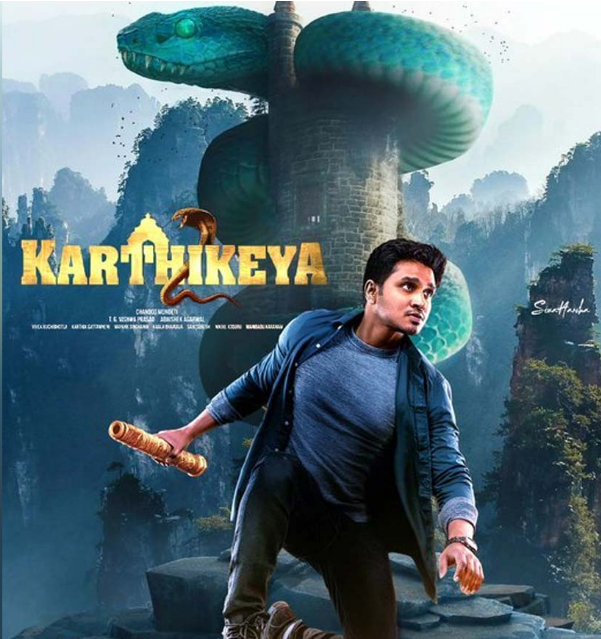
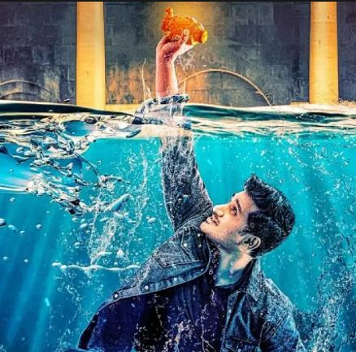
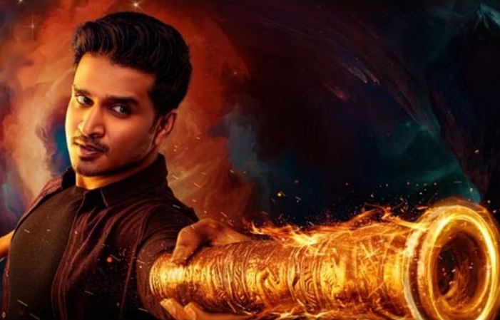
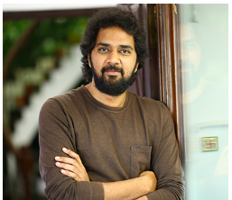
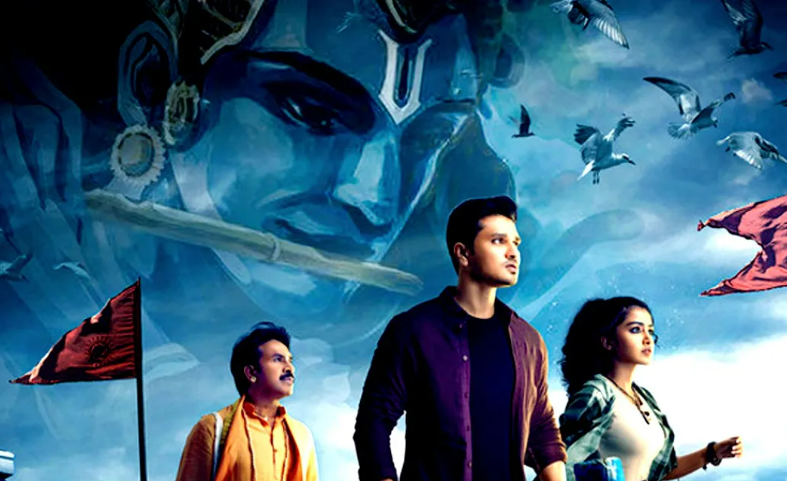

Karthikeya-2

Before the Kalyug begins, Lord Krishna hands over an anklet that holds the answer to all of world’s miseries. Years later a doctor finds himself in the thick of things when the pursuit for the anklet carries on.
Chandoo Mondeti made a successful debut years ago with Karthikeya, hinting that the titular character Nikhil Siddhartha plays allowed for the series to carry on through his quest for truth. With Karthikeya 2, he does the same, leaving the ending open for another part in the series that takes us on an adventure along with the curious doctor.
STORY

The film starts with lord Krishna forecasting the future and penning all the solutions to the problems in a special Kankanam. Cut to present, Karthikeya(Nikhil) is a doctor who goes to Dwaraka along with his mother. There, he gets embroiled in a mystery which is related to the special Kankanam. What is this special mystery ? How did Karthikeya solve it? Where does Anupama Parameswaran feature in this setup? To know the answers, you need to watch the film on the big screen.
Karthik (Nikhil Siddhartha) is now a doctor who has a successful career not just in the medical field but also otherwise as a myth-buster. We’re told that after the events at Subrahmanyapuram, he has continued to provide logical answers to supposedly supernatural questions across the country. When his mother (Tulasi) takes him along to Dwaraka, he finds himself in midst of an adventure he did not seek out. With a murderous clan and a secret society on his heels, will he and Mugdha (Anupama Parameswaran) manage to find a missing anklet that might hold the answers to a future catastrophe?
Chandoo ups the ante with Karthikeya 2 when it comes to Nikhil’s character and the extent of danger he finds himself in. While the prequel spent a lot of time exploring his agnostic character’s curious nature, apart from his love story with Valli (Swathi, who’s completely missing from this tale with no answers given), the sequel dives right into things from the get-go, almost wasting no time in setting up new characters. As Karthik finds himself in the middle of an already on-going journey, so do we, with new issues cropping up along the way.

The change in tonality and even the budget definitely suits the Karthikeya series, allowing for an immersive experience and richer storytelling that’s much more focused than the predecessor. While it’s odd that a lengthier runtime has been chosen this time around, with some scenes dragging unnecessarily, the film remains an engaging one for the most part. You’re already invested in Karthik, you know how he thinks and you know he won’t get off the metaphorical train until it reaches the desired destination. And you’re happy to be along for the ride for the most part.
Where the film doesn’t work is when it gets too hammy and in-your-face with the fact that the characters believe Lord Krishna’s story isn’t just mythology, it’s in fact ‘history’. The attempt comes across as jarring, especially when two key characters suddenly change their tune by the end. This stands out like a sore thumb because you have already believed that Lord Krishna handed over an important anklet, you didn’t need Karthik to suddenly be not-so-inquisitive anymore, nor did you need a speech from Anupam Kher hailing the god for his scientific prowess. A key character even says a particular line more than once, in case you missed it the first time. A subtler approach would’ve suited the way the first part of the series and even the second part initially resumes.
It’s also sad that where the original underlined the fact that sometimes men of science use faith for their greed, almost every scientist, architect, et al remains a staunch devotee in this film.
None-the-less Nikhil picks up where he left off with Karthik, adding a touch of maturity but maintaining the almost haughty nature the character possesses. He breathes life into the character and shoulders the story well. His character arch and growth should’ve been handled a little more smoothly for the desired effect at the end. But it’s thankful the film doesn’t spend too much time on trying to force a romance between him and Anupama, who does a good job as the sidekick whose intentions aren’t always transparent. Satya and Praveen, Karthikeya’s friends are traded in for Srinivasa Reddy and Harsha Chemudu, who bring some much-needed laughs to an otherwise serious story. The latter’s ‘paan, pyaar aur paisa’ line in particular is hilarious. Rest of the cast don’t really get to do much as their characters never really evolve enough and when they do, it doesn’t feel organic.
KARTHIKEYA DIRECTOR

Nikhil and Chandoo Mondeti are a hit pair and they have done it once again with Karthikeya 2. Kudos to director Chandoo Mondeti for penning an intriguing thriller and connecting the past and present worlds quite well. His writing is fine and gives the audience moments filled with thrills and suspense.
It has been quite some time since we have seen Nikhil on screen and he makes it for the gap with a solid performance. He has matured a lot with his acting and is quite settled in his approach towards his character. He has a very key role and has to convince the audience what we are seeing is actually true and not fiction. In this department Nikhil scores full marks.
The surprise package of the film is Kaala Bhairava and his stunning music score. He shocks the audience with spell binding BGM which elevates the film to another level altogether. Even the ordinary scenes create interest for the audience with the enchanting BGM.
Not only does the film have thrills but the director added fun through the roles of Srinivasa Reddy and Viva Harsha who are solid in their roles and evoke good fun. Anupama Parameswaran gets a good role and she is neat in her given part. Anupam Kher gets a small but impactful role and shines.
What makes Karthikeya 2 interesting is the intriguing factor as to what will happen next. The quest to find the truth holds the attention of the audience. The director does not deviate from the main theme and keeps the audience engaged for the most part Though all the links are ended properly, there is a bit of confusion in the beginning of the film. The whole concept of lord Krishna and how the present generation is after a special Kankanam is not well established. Probably, the director should have added a character or a few scenes to make the audience understand what the actual plot is all about.
The pace in the second half goes down a bit as the director fails to elevate the villain’s angle properly. The plot goes through various stages and this journey could have been narrated in an even easier manner to make the common people understand.

The production values of the film are top notch and special mention to the cameraman Karthik. His visuals and color tone used for the adventure scenes is very good. The editing part is also impressive as the scenes do not have much lag.
The dialogues are pretty good and the ones used for Anupam Kher are amazing. The production design is rich and the VFX used is quite realistic. The costume design, props used and the locations chosen are quite good.
Coming to the director Chandoo Mondeti, he has done a very good job with the film. One can say that Karthikeya 2 is his best film to date. He takes a plot with a backdrop of mythology and setting it up in the present day world was not easy. Not only has he done that well but he made sure the film has comedy, thrill, and suspense in equal proportions. His screenplay is good but the usage of a few sub plots and their connections in the end should have been more clear from the beginning.
Karthikeya 2 remains a worthy successor to Karthikeya minus the over-the-top strong-arming of Nikhil’s character by the end. If you've loved Karthik's questioning nature, you just won't buy it. Watch this one if you’re a fan of the first film, you might just have to wait a while though to meet the curious adventurist again in Karthikeya 3.
KARTHIKEYA ACTORS
 Nikhil Siddhartha as Dr. Karthikeya Kumaraswamy
Nikhil Siddhartha as Dr. Karthikeya Kumaraswamy
 Anupama Parameswaran as Mugdha
Anupama Parameswaran as Mugdha
 Srinivasa Reddy as Sadananda
Srinivasa Reddy as Sadananda
 Anupam Kher as Dr. Dhanvanthri Vedpathak
Anupam Kher as Dr. Dhanvanthri Vedpathak
 Adithya Menon as Dr. Santanu Mukherjee
Adithya Menon as Dr. Santanu Mukherjee
 Harsha Chemudu as Suleman
Harsha Chemudu as Suleman